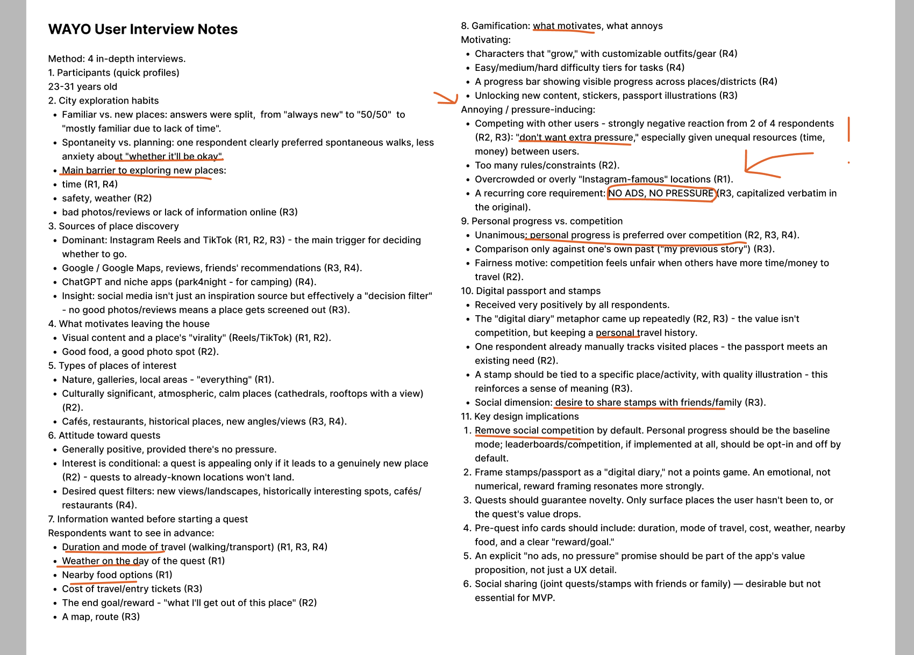

WAYO


About the
Product
WAYO is a mobile-first urban exploration app. It turns exploring a city into ready-made quests — short, self-guided routes with a handful of stops and the practical info you need before setting off — and a Passport where completed quests turn into collectible digital stamps.
Unlike a concept-only case study, WAYO has been designed, coded and shipped as a live MVP. As Co-founder and Product Designer, I continue to develop the product through user feedback, usability testing and post-launch analytics.
Year: 2026
Role: Co-founder &
Product Designer
Location: London, UK
Status: Live MVP ·
Ongoing

The
Problem
I love travelling and discovering new places, but I kept running into the same problem: planning even a simple day out took far longer than it should. I'd end up bouncing between Google Maps, TikTok and Instagram, reviews, transport apps and half-remembered recommendations just to decide where to go and whether it was actually worth it.
I wasn't sure if that was just me, so I started asking other people who explore cities regularly — and found the same pattern: plenty of curiosity about new places, but not much patience for the research it took to act on it. That gap became the starting point for WAYO.
My Role &
Responsibilities
I co-founded WAYO and led product design from 0 to 1 — from the original problem and early research, through product definition, UX/UI design and prototyping, to a live product I coded and built myself.
Owning the build alongside the design meant I could test real technical constraints early, rather than handing off a Figma file and stopping there.
Responsibilities:
- Product strategy & MVP prioritisation
- UX research & usability testing
- Competitive research & positioning
- Information architecture & user flows
- Wireframing, prototyping & mobile UI design
- Accessibility & inclusive UX
- Front-end & back-end development
- Launch, analytics & ongoing iteration
Research &
Key Insights
To go beyond my own experience, I ran a round of in-depth interviews with people who explore cities regularly, alongside competitor research into how people currently plan a day out. A few patterns came up again and again.
People were genuinely open to exploring somewhere new — time, not interest, was the biggest barrier to actually doing it.
Before starting, people wanted to know duration, distance, difficulty and cost — and, as one respondent put it, “what I'll get out of this place.”
Weather, accessibility, nearby food and cost came up repeatedly — not as nice-to-haves, but as things people needed to know upfront, not after they'd already arrived.
Personal progress was consistently preferred over leaderboards or rankings, especially since not everyone has equal time or money to travel. One respondent was blunt about it: “no ads, no pressure.”
People liked the idea of collecting proof of what they'd completed. Several described it less like a points system and more like a “digital diary” of places they'd actually been.

User
Persona
Based on the research findings and the target audience identified, I created a user persona to represent the needs, behaviours and motivations that shaped WAYO.
Age: 18–35
Context: Lives in or regularly explores London
Goals: Discover interesting places, make spontaneous plans and explore without spending too much time planning
Frustrations: Too much research and uncertainty about whether somewhere is worth visiting
Motivation: Personal experiences, memories and visible progress rather than competition
.png)
Product
Goals
Those insights turned into goals framed around what should change for the user, not just what the product should do:
- Save time when planning. Put the information someone needs in one place, so they spend less time researching and more time actually exploring.
- Make saying yes an easy decision. Surface enough detail upfront that committing to a quest doesn't feel like a gamble.
- Fit around practical needs. Make it quick to find something that matches accessibility, weather, budget or time, instead of finding out too late that it doesn't.
- Give people a reason to keep exploring. Build motivation around personal progress rather than rankings, so it stays enjoyable instead of pressured.
- Keep quests achievable. Design experiences that fit into a spare hour or afternoon, not something that feels like a big commitment.
- Make narrowing down choices effortless. Use filtering so deciding what to do takes seconds, not another round of scrolling.
- Learn from real behaviour. Launch a focused MVP and let actual usage and feedback shape what comes next.
From Insights
to Structure
These insights shaped the product's structure directly. Explore surfaces ready-made quests instead of asking people to research a route themselves. Quest Detail answers "is this worth it?" before anyone commits. The Passport turns completed quests into a personal record rather than a scoreboard. Saved and Profile round out the four main tabs, giving people somewhere to hold onto quests for later and see their exploration in one place.
Information
Architecture
The core loop — Discover → Decide → Explore → Complete → Collect — sits behind four main navigation tabs: Explore, Saved, Passport and Profile.

Core
User Flow

The primary flow follows Explore → Quest Detail → Active Quest / Map → Quest Complete → Stamp Earned → Passport, taking a user from browsing to a completed, collected memory.
Final Product
(UI)
Each screen answers a specific question a user has before, during or after a quest — a ready-made, self-guided local route with a handful of stops: What should I expect? Is this worth my time? Where am I now? What have I achieved?
Insight: time, not interest, was the real barrier to trying somewhere new.
ExploreReducing the effort of finding somewhere new
The Explore screen surfaces ready-made quests instead of asking users to research a route themselves. Filters for difficulty, duration, distance and accessibility let people narrow choices without leaving the app.

Insight: “what I'll get out of this place” mattered before committing.
Quest DetailHelping users decide before they commit
Research showed that distance, time, difficulty, cost and accessibility directly affect whether someone starts a quest. The Quest Detail screen surfaces this information clearly before the "Start quest" step.


Insight: people wanted to know what's next, not just before starting.
Active QuestTurning discovery into action
Once a quest starts, the map view tracks progress against the route and stops, so users always know what's next, how much is left, and when a quest is complete.

Insight: “no ads, no pressure” — personal progress over competition.
PassportProgress without competition
The Passport records a user's exploration progress, and each completed quest earns a stamp — a small badge tied to that specific place. Together they turn completed quests into a personal collection, reinforcing progress through memory rather than rankings or leaderboards.

From Design
to Live Product
WAYO didn't stop at a Figma prototype — I built it myself: React and Tailwind CSS on the frontend, Node.js/Express and MySQL on the backend, Leaflet for the map and route tracking, deployed on Railway. That let me test the real experience beyond controlled usability sessions.
Launching the product introduced another feedback layer: I can now compare design assumptions with real user behaviour and use that evidence to guide future iterations.
TRY LIVE PRODUCTPost-launch
Analytics
Amplitude is connected to the live product to help understand how users interact with WAYO after launch. Now that it's tracking real usage, the questions I want it to help answer are:
Which quests attract attention?
Do users move from viewing a quest to starting it?
Are filters, Saved and other discovery tools being used?
Where do users continue or leave the quest flow?
Do people come back to start another quest after finishing one?
Product
Roadmap
WAYO is a live MVP, and these are the next priorities — shaped by what research and early usage are already pointing to, not a feature wishlist.
Improve live location tracking and route guidance so users can follow quests more confidently while walking.
Introduce authentication with Google and Apple so users can securely keep their saved quests, completed quests, stamps and progress across devices.
Expand the quest library across London and gradually cover more neighbourhoods and types of experiences.
Add more location and quest photography so users can better understand the atmosphere and value of an experience before starting.
What I Learned
WAYO changed the way I think about product design because the work did not end when the final screens were created.
Research changed the hierarchy of the product: practical decision-making information became more important than adding more game mechanics, while personal progress proved more relevant than competitive features.
Launching the product also added a new feedback layer. Design decisions can now be compared with real user behaviour through analytics, helping prioritise future iterations using evidence rather than assumptions.
Research → Prioritisation → Design → Launch → Measurement → Iteration